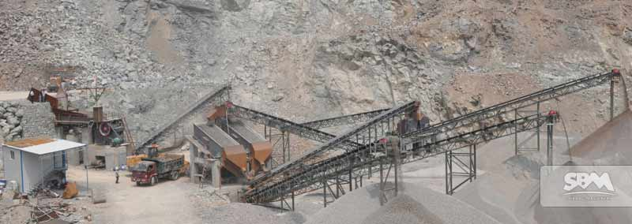

In the field of mica processing, the application of the mill is crucial, and the ultrafine Vertical Roller Mill is a deep-processing fine grinding equipment that helps mica processing achieve greater value. We strive for excellence and manufacture the ideal ultrafine vertical roller mill equipment to help each mica processing project create profits, broaden the market and gain more value.
In the field of fine powder deep processing, the ultrafine vertical roller mill is widely used and is an ideal mill with higher application value. What kind of grinding machine is suitable for grinding mica stone? What kind of grinding machine can be used to prepare mica stone ultrafine vertical roller mill powder? We are based on the mica processing field, and the mica ultrafine vertical grinding machine is ideal for fine grinding. Powder processing equipment, and we provide one-to-one product service, develop a reasonable selection, push the price of accurate mica ultrafine vertical roller mill, develop a selection plan for different powder processing customers, and achieve a better resource combination. Great market value.
The vertical roller mill used for processing phosphogypsum is a new type of grinding equipment. It is also the ideal model for our company to upgrade on the basis of traditional mill. What is the price and selection of the vertical roller mill used for 200 mesh phosphogypsum powder? Now, let's take a look at the secrets. The main methods of using phosphogypsum are: gypsum powder for building construction, gypsum board and gypsum block; cement retarder; cement and sulfuric acid; ammonium sulfate; fine paper filler; agricultural soil improver. In the context of the continuous development of the market economy, the market use of phosphogypsum continues to expand. The vertical roller mill used for processing phosphogypsum is the ideal equipment for our manufacture. According to the processing needs of different customers, we have rationally customized the selection and configuration plan. The price of phosphogypsum vertical roller mill is more scientific.
The ultrafine vertical roller mill is used in the field of non-metallic ore ultrafine vertical roller mill powder preparation. It is very popular for the preparation of fluorite ore and is an ideal fine powder grinding equipment. For the application of fluorite ore, we have carefully developed fluorite powder Raymond mill, fluorite block vertical roller mill, fluorite ore mill, etc. The whole set of equipment runs smoothly, with reliable performance and long service life. It is the ideal equipment for this field.
As an ideal equipment for processing fluorite ore, ultrafine vertical roller mill is the choice for preparing fluorite fine powder. With the development and development of the market, the application value of fluorite ore ultrafine vertical roller mill will be greatly improved. Helping the field create market profits and harvest more value mill choices.
Next Article: Columbite Ore Mining Equipment